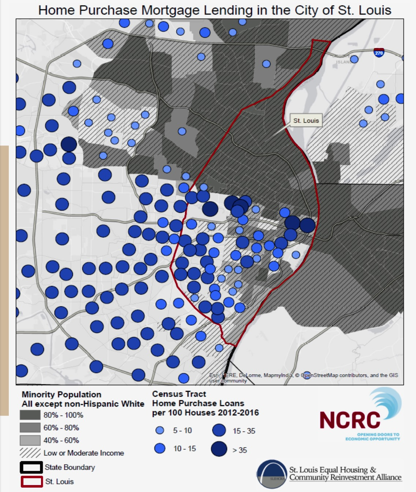

WHY ARE WE HERE?
Discrimination in Banking.
The Credit Application Experience
GENDER OF FIRM OWNERS |
APPLIED FOR CREDIT |
REJECTED |
| FEMALE |
11.1% |
32.6% |
| MALE |
13.7% |
25.5% |
| RACE/ETHNICITY OF FIRM OWNERS |
APPLIED FOR CREDIT |
REJECTED |
| HISPANIC |
14.5% |
39.3% |
| WHITE |
13.1% |
24.7% |
| BLACK OR AFRICAN AMERICAN |
17.7% |
53.4% |
| ASIAN |
12.0% |
34.9% |
*Source: Availability of Credit to Small Businesses, Sept. 2017 U.S. Federal Reserve Credit: Kae Petrin | St.Louis Public Radio
Freddie Lee's Gourmet Sauces...
Founded in 2010 by Freddie Lee James Jr.
Contracts with Schnucks, Dierbergs, Straub's, Home Goods.
Products are sold in 1,000 stores in the U.S. and Jamaica.
Over 200k in annual revenue.
750 Credit Score
Can't secure a bank loan to expand.

Home Purchase Mortgage Lending in the City of St. Louis
The map shows the relationship of mortgage lending with
Low to Moderately Income areas and predominantly African American
neighborhoods of the St. Louis region during the period from 2012-2014
There is little Mortgage Lending (less than 4 Loans per 100 houses)
in many of the predominantly African American and lower-income neighborhoods of the region
We need financial inclusion and access for everyone.